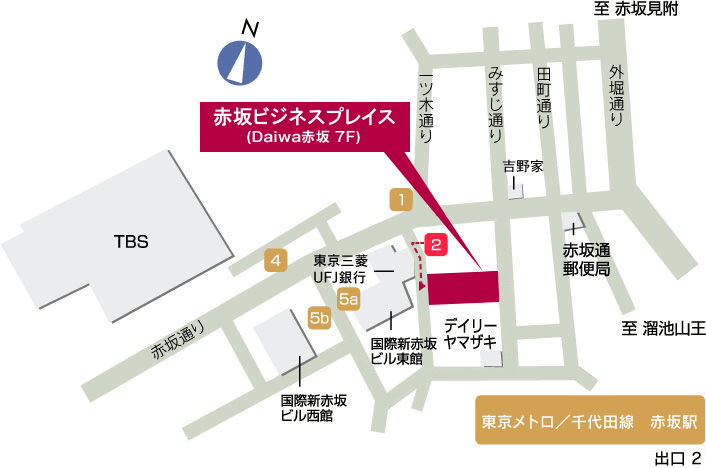

交通アクセス｜赤坂のレンタルオフィス｜Openoffice：東京・大阪をはじめ全国に50拠点以上

(注)略図ですので、縮尺、建物の外観等は実際と異なります。
● 地下鉄 千代田線「赤坂駅」出口2番から徒歩1分以内
・地下鉄 銀座線、南北線「溜池山王駅」 出口10番 から徒歩5分 ・地下鉄 銀座線、丸の内線「赤坂見附駅」 出口A から徒歩5分
(赤坂駅)
(溜池山王駅)
(赤坂見附駅)
みすじ通り沿い。１階に「鯛めし京風おでん 折おり」、「中国火鍋専門店 小肥羊 赤坂店」があるビルです。
〒107-0052 東京都港区赤坂 2-14-5 Daiwa 赤坂ビル 7F